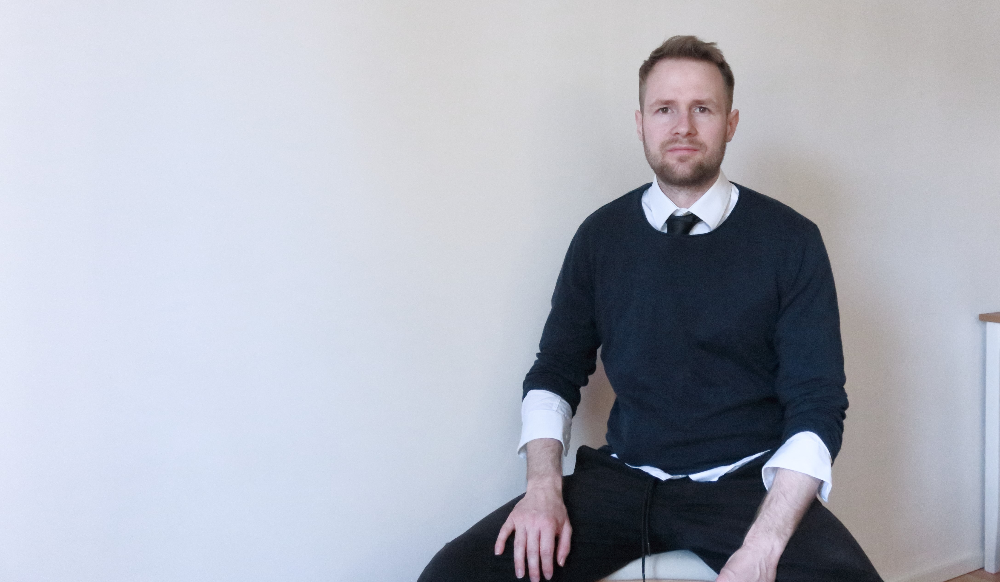

About
Architecture graduate based in Aachen — working at the intersection of spatial thinking, visual communication, and digital design.
My work spans from single-family houses rooted in vernacular tradition to urban-scale planning proposals. Alongside architectural practice, I design and build hand-coded websites — combining the same attention to structure and detail that I bring to buildings.
I believe good design is always contextual: it responds to place, purpose, and the people who use it.